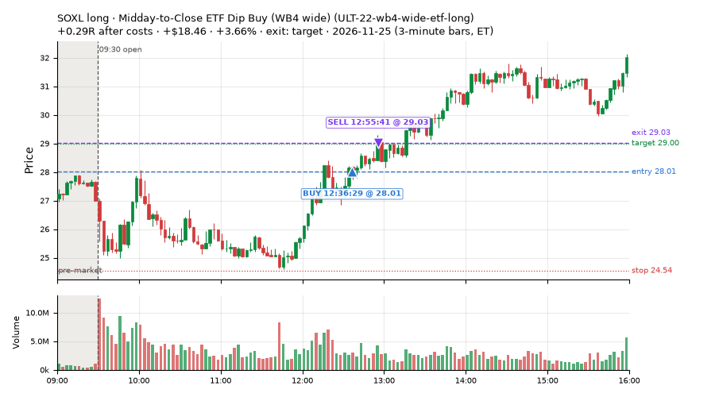
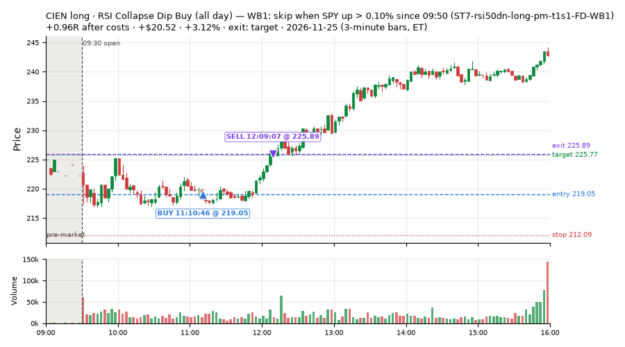
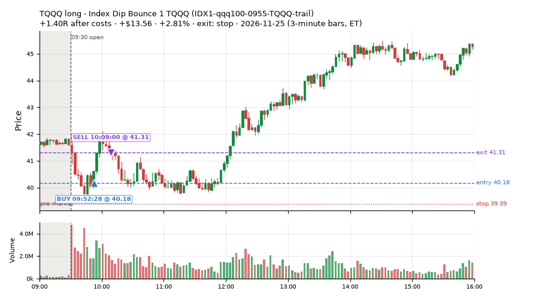
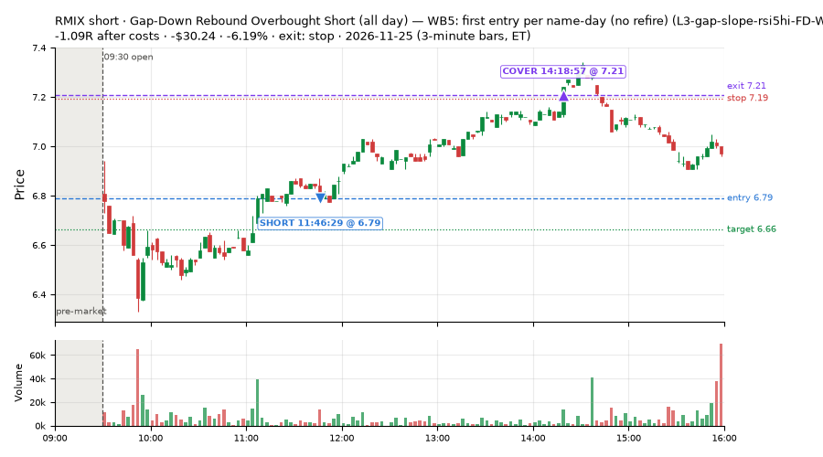
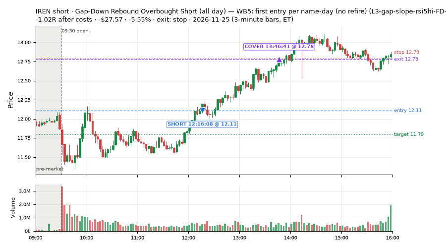
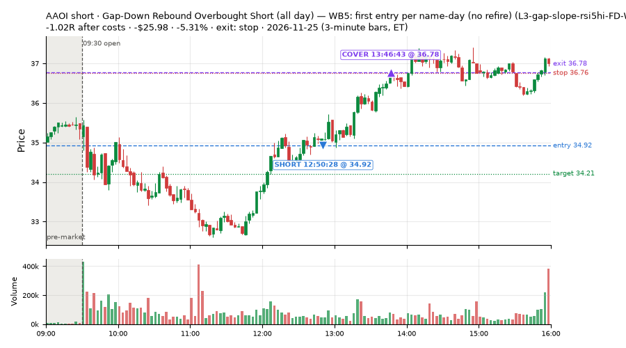
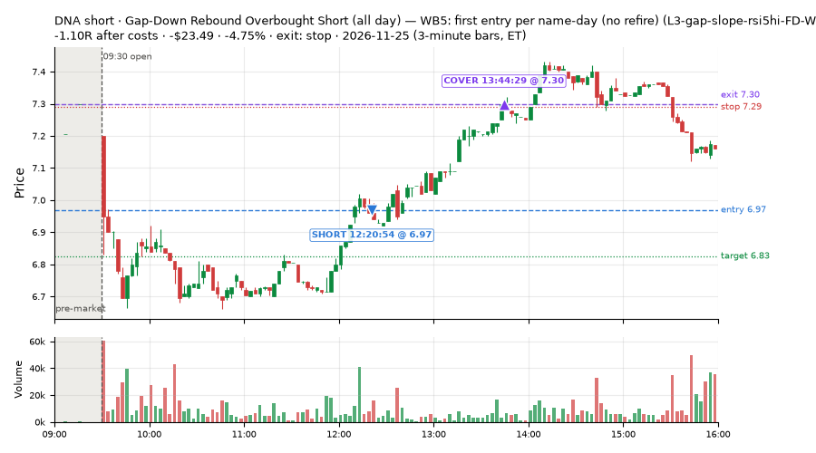
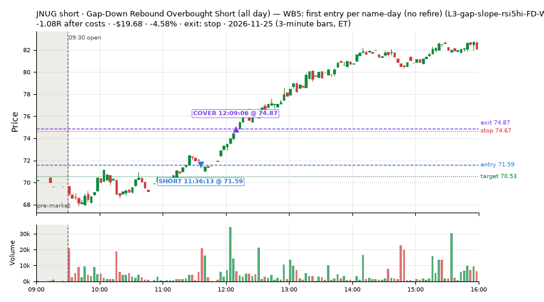

237 trades · win rate 12% · P/L $-1,900.41
PROBATION: no live setup has passed both locked test periods. 10 owner-directed setups added 2026-10-08 (MarcoFlow top 5 + 5 new), untested live. RW6G1 (RW6 + VWAP band guard) added 2026-10-09, probation.

| Symbol | Setup | Side | In | Out | Entry | Exit | Exit reason | % gained | P/L |
|---|---|---|---|---|---|---|---|---|---|
| SOXL | Midday-to-Close ETF Dip Buy (WB4 wide) (ULT-22-wb4-wide-etf-long) | long | 12:36 | 12:55 | 28.01 | 29.03 | target | +3.66% | $18.46 |
| CIEN | RSI Collapse Dip Buy (all day) — WB1: skip when SPY up > 0.10% since 09:50 (ST7-rsi50dn-long-pm-t1s1-FD-WB1) | long | 11:10 | 12:09 | 219.05 | 225.89 | target | +3.12% | $20.52 |
| TQQQ | Index Dip Bounce 1 TQQQ (IDX1-qqq100-0955-TQQQ-trail) | long | 09:52 | 10:09 | 40.18 | 41.31 | stop | +2.81% | $13.56 |
| Symbol | Setup | Side | In | Out | Entry | Exit | Exit reason | % lost | P/L |
|---|---|---|---|---|---|---|---|---|---|
| RMIX | L3-gap-slope-rsi5hi-FD-WB5 | short | 11:46 | 14:18 | 6.79 | 7.21 | stop | -6.19% | $-30.24 |
| IREN | L3-gap-slope-rsi5hi-FD-WB5 | short | 12:16 | 13:46 | 12.11 | 12.78 | stop | -5.55% | $-27.57 |
| AAOI | L3-gap-slope-rsi5hi-FD-WB5 | short | 12:50 | 13:46 | 34.92 | 36.78 | stop | -5.31% | $-25.98 |
| DNA | L3-gap-slope-rsi5hi-FD-WB5 | short | 12:20 | 13:44 | 6.97 | 7.30 | stop | -4.75% | $-23.49 |
| JNUG | L3-gap-slope-rsi5hi-FD-WB5 | short | 11:36 | 12:09 | 71.59 | 74.87 | stop | -4.58% | $-19.68 |








Signal to fill: median 2s, 90th percentile 3s (237 trades). Bars close each minute; the order follows the bar close.
Best excursion (MFE): median 0.18R; worst (MAE) median 1.02R. 65% of trades never got +0.25R in our favour; 0 reached +1R and still closed at or below 0.
| Symbol | Setup | Best R | Worst R | Closed R |
|---|---|---|---|---|
| ASTS | RW6-ns2-up3-short-FD | +0.77 | -1.10 | -1.04 |
| DKNG | RW6-ns2-up3-short-FD | +0.59 | -1.04 | -1.08 |
| INGM | L3-gap-slope-rsi5hi-FD-WB5 | +0.41 | -1.12 | -1.22 |
| PPTA | L3-gap-slope-rsi5hi-FD-WB5 | +0.28 | -1.15 | -1.26 |
| HBM | L3-gap-slope-rsi5hi-FD-WB5 | +0.38 | -1.15 | -1.16 |
| Entry time | Trades | Win | Avg R | P/L |
|---|---|---|---|---|
| 09:50-10:30 | 4 | 50% | +0.04 | $-2.53 |
| 10:30-11:30 | 11 | 45% | -0.03 | $-15.25 |
| 11:30-13:00 | 123 | 6% | -1.00 | $-1,466.71 |
| 13:00-14:00 | 71 | 8% | -0.84 | $-395.30 |
| 14:00-16:00 | 28 | 32% | -0.16 | $-20.62 |
| Setup | Trades | Win | Avg R after costs | Adj R (net of SPY) | Avg R ex-market (all sessions) | P/L |
|---|---|---|---|---|---|---|
| Spike-Pullback Flag Breakout (CWT12-flag-s1-long) | 1.0 | 100% | +0.61 | -0.56 | +0.28 (beta +0.67, n 18) | $2.48 |
| Index Dip Bounce 1 TQQQ (IDX1-qqq100-0955-TQQQ-trail) | 1.0 | 100% | +1.40 | +1.03 | – | $13.56 |
| Gap-Down Rebound Overbought Short (all day) — WB5: first entry per name-day (no refire) (L3-gap-slope-rsi5hi-FD-WB5) | 182.0 | 7% | -0.94 | -0.59 | -0.34 (beta -0.83, n 214) | $-1,746.91 |
| * Shallow Nasdaq Dip, Breadth Turn (TQQQ) (near-miss) (LD2-qqq-dip015-breadthturn-tqqq-t05s1-long) | 1.0 | 100% | +0.12 | +0.12 | -0.08 (beta +2.56, n 6) | $2.86 |
| * SPY Dip of 0.2 ATR, Breadth Turn (SPXL, trailing) (near-miss) (LD6-spy-dip020atr-breadthturn-spxl-holdtr-long) | 1.0 | 0% | -0.28 | -0.14 | – | $-4.85 |
| Gap-Down Reclaim Fade, Afternoon (near-miss) (NM-PM-gapdn-above-pdh-rvol-short) | 23.0 | 30% | -0.21 | +0.00 | -0.08 (beta -1.24, n 24) | $-18.80 |
| Gap-Down Pop Fade, Heavy Selling (all day) — WB4: up-day entry cut + SPY exit 0.30% (RW3-gapdn-rsi5pop-flowsell-short-FD-WB4) | 5.0 | 0% | -0.60 | -0.36 | -0.20 (beta -0.74, n 42) | $-24.98 |
| Big Gainer SMA50 Cross Fade (all day) (RW6-ns2-up3-short-FD) | 16.0 | 19% | -0.71 | -0.44 | -0.11 (beta -0.64, n 39) | $-165.42 |
| RSI Collapse Dip Buy (all day) — WB1: skip when SPY up > 0.10% since 09:50 (ST7-rsi50dn-long-pm-t1s1-FD-WB1) | 1.0 | 100% | +0.96 | +0.58 | -0.43 (beta +0.59, n 10) | $20.52 |
| Midday-to-Close ETF Dip Buy (WB4 wide) (ULT-22-wb4-wide-etf-long) | 6.0 | 50% | +0.04 | +0.04 | +0.15 (beta +1.46, n 34) | $21.13 |
Market direction (SPY, beta 1) accounted for $-679.66 of today's $-1,900.41; the rest ($-1,220.75) came from the setups themselves. Avg R net of SPY: -0.48 (incl. a hedge leg's cost; report only).
21 setups live today. Today: 837 signals, 237 taken, 1 lost because another setup held the symbol (0%). Since 2026-11-05 (15 sessions): 2272 signals, 873 taken, 10 lost to other setups (0%). Peak open positions today 102 of 400 slots. Earnings blackout removed 118 symbols before scanning.
Simulated playing time (not live): 1389 what-if trades of signals not taken, avg -0.45R, 34% winners; of them 10 lost to another setup (avg +0.14R).
Silent: IDX3-spy075-0955-3x-trail, LD5-st2-breadthup-t05s1-long, GEN-261019-06-VWAPxUp-EMAdiffge0p29-PM-SPYgt0p5-holdtr-long, GEN-261026-10-ORBfailDn-EMAdChglem0p051-PM-BRopgt0p65-t1s1-long, NM-RWN4-ns2-spyup05-notfri-short
| Prio | Setup | Today sig / taken | Sessions | Signals / taken / trades | Taken/day | Expected/day | Lost to other setups | Lost to (setup n) | Top skip reasons | SIMULATED: not-taken n / avg R / win | Verdict |
|---|---|---|---|---|---|---|---|---|---|---|---|
| 1 | Gap-Down Pop Fade, Heavy Selling (all day) — WB4: up-day entry cut + SPY exit 0.30% RW3-gapdn-rsi5pop-flowsell-short-FD-WB4 | 5 / 5 | 7 | 78 / 42 / 42 | 6.00 | – | 0 | – | spread / quote / size 25, other 8, not shortable / shorts off 3 | 36 / +0.23R / 67% | ok 30.0 entries/week |
| 2 | Gap-Down Rebound Overbought Short (all day) — WB5: first entry per name-day (no refire) L3-gap-slope-rsi5hi-FD-WB5 | 745 / 182 | 5 | 957 / 214 / 214 | 42.80 | – | 0 | – | other 308, not shortable / shorts off 246, spread / quote / size 178 | 736 / -0.67R / 23% | ok 214.0 entries/week |
| 3 | RSI Collapse Dip Buy (all day) — WB1: skip when SPY up > 0.10% since 09:50 ST7-rsi50dn-long-pm-t1s1-FD-WB1 | 3 / 1 | 7 | 18 / 10 / 10 | 1.43 | – | 0 | – | spread / quote / size 4, other 4 | 8 / -0.12R / 50% | slow 7.1 entries/week; ~8 weeks to 60 trades |
| 4 | 20-Minute Opening Range Breakout — WB3: top 10 in play + price >= $20 orb20_a-WB3 | 1 / 0 | 7 | 6 / 2 / 2 | 0.29 | – | 0 | – | spread / quote / size 3, trigger missed between polls 1 | 3 / -0.77R / 0% | slow 1.4 entries/week; ~42 weeks to 60 trades |
| 5 | Index Dip Bounce 1 TQQQ IDX1-qqq100-0955-TQQQ-trail | 1 / 1 | 15 | 3 / 3 / 3 | 0.20 | – | 0 | – | – | 0 / – | slow 1.0 entries/week; ~60 weeks to 60 trades |
| 6 | * SPY Dip of 0.2 ATR, Breadth Turn (SPXL, trailing) (near-miss) LD6-spy-dip020atr-breadthturn-spxl-holdtr-long | 1 / 1 | 15 | 3 / 3 / 3 | 0.20 | – | 0 | – | – | 0 / – | slow 1.0 entries/week; ~60 weeks to 60 trades |
| 7 | * Oversold Pop after an SPY Dip-Turn (trailing) (near-miss) LD7-ns1-idxturn-holdtr-long | 0 / 0 | 15 | 12 / 6 / 6 | 0.40 | – | 0 | – | spread / quote / size 2, price through stop/target 2, other 2 | 6 / -0.10R / 33% | slow 2.0 entries/week; ~30 weeks to 60 trades |
| 8 | Gap-Down Reclaim Fade, Afternoon (near-miss) NM-PM-gapdn-above-pdh-rvol-short | 30 / 23 | 15 | 35 / 24 / 24 | 1.60 | – | 0 | – | other 7, not shortable / shorts off 2, spread / quote / size 2 | 11 / -0.25R / 55% | slow 8.0 entries/week; ~8 weeks to 60 trades |
| 9 | Generated: Late Upper-Wick Short (SPY down) GEN-261029-07-UpWickge0p59-DayRngVsPrevle0p42-LATE-SPYltm0p5-t05s1-short | 0 / 0 | 8 | 58 / 48 / 48 | 6.00 | – | 0 | – | other 7, spread / quote / size 3 | 10 / +0.40R / 100% | ok 30.0 entries/week |
| 10 | Generated: Late New-Low Buy (SPY down) GEN-261026-06-NewLOD-SMA20slopelem0p28-LATE-SPYltm0p25-t1s1-long | 0 / 0 | 8 | 80 / 61 / 61 | 7.62 | – | 0 | – | other 11, spread / quote / size 8 | 19 / -0.14R / 42% | ok 38.1 entries/week |
| 11 | Prior-Day-High Break Fade (all day) ST5-pdbrkup-short-mid-t05s1-FD | 0 / 0 | 15 | 52 / 27 / 27 | 1.80 | 0.78 | 2 | ST7-rsi50dn-long-pm-t1s1-FD-WB1 2 | not shortable / shorts off 12, spread / quote / size 9, symbol held by another setup 2 | 25 / -0.04R / 64% | slow 9.0 entries/week; ~7 weeks to 60 trades |
| 12 | Generated: PM Gap-Down Above-VWAP Short GEN-261027-04-VWAPatrge0-Gaplem2-FromOpenlem2-PM-SPYdn-t1s1-short | 0 / 0 | 8 | 96 / 44 / 44 | 5.50 | – | 0 | – | spread / quote / size 19, other 18, not shortable / shorts off 15 | 52 / +0.26R / 67% | ok 27.5 entries/week |
| 13 | * Shallow Nasdaq Dip, Breadth Turn (TQQQ) (near-miss) LD2-qqq-dip015-breadthturn-tqqq-t05s1-long | 1 / 1 | 15 | 6 / 6 / 6 | 0.40 | – | 0 | – | – | 0 / – | slow 2.0 entries/week; ~30 weeks to 60 trades |
| 14 | Early NS3 Short While QQQ Up (near-miss) NM-RWR3-ns3-qqqup-early-short | 0 / 0 | 15 | 25 / 11 / 11 | 0.73 | – | 0 | – | spread / quote / size 7, not shortable / shorts off 5, other 2 | 14 / +0.36R / 71% | slow 3.7 entries/week; ~16 weeks to 60 trades |
| 15 | Generated: Open Oversold Below-VWAP Short GEN-261023-03-RSI5le13-VWAPatrlem0p34-OPEN-BRvwgt0p6-holdtr-short | 2 / 0 | 8 | 21 / 10 / 10 | 1.25 | – | 0 | – | spread / quote / size 8, not shortable / shorts off 3 | 11 / -0.13R / 27% | slow 6.2 entries/week; ~10 weeks to 60 trades |
| 16 | Gap-Up Faller Bounce Short (all day) ST3-rsi5up-short-pm-t1s1-FD | 0 / 0 | 15 | 50 / 29 / 29 | 1.93 | 1.35 | 1 | GEN-261027-05-VolRatioge1p5-ORLdistge0p41-ATRdge6-MID-BRvwgt0p7-t05s1-long 1 | not shortable / shorts off 11, spread / quote / size 8, symbol held by another setup 1 | 21 / -0.23R / 38% | slow 9.7 entries/week; ~6 weeks to 60 trades |
| 17 | Generated: Open First-Dip Short (extended) GEN-261022-04-RSI2le0-Eff6ge0p83-SMA20dge0p59-OPEN-BRvwlt0p5-t1s1-short | 3 / 0 | 8 | 36 / 9 / 9 | 1.12 | – | 0 | – | spread / quote / size 12, other 9, not shortable / shorts off 6 | 27 / -0.14R / 48% | slow 5.6 entries/week; ~11 weeks to 60 trades |
| 18 | Panic Flush Reversal (deep, 3x volume) CWT05-flush-m075-v3-long | 0 / 0 | 15 | 27 / 14 / 14 | 0.93 | – | 0 | – | other 6, spread / quote / size 4, broker rejected 2 | 12 / -0.09R / 67% | slow 4.7 entries/week; ~13 weeks to 60 trades |
| 19 | Spike-Pullback Flag Breakout CWT12-flag-s1-long | 1 / 1 | 15 | 31 / 18 / 18 | 1.20 | – | 0 | – | other 11, spread / quote / size 1, broker rejected 1 | 13 / +0.29R / 85% | slow 6.0 entries/week; ~10 weeks to 60 trades |
| 20 | Big Gainer SMA50 Cross Fade (all day) RW6-ns2-up3-short-FD | 37 / 16 | 9 | 103 / 39 / 39 | 4.33 | 7.12 | 3 | orb20_a-WB3 1, LD7-ns1-idxturn-holdtr-long 1, ULT-22-wb4-wide-etf-long 1 | not shortable / shorts off 38, spread / quote / size 20, symbol held by another setup 3 | 63 / -0.22R / 44% | ok 21.7 entries/week |
| 21 | Midday-to-Close ETF Dip Buy (WB4 wide) ULT-22-wb4-wide-etf-long | 7 / 6 | 4 | 42 / 34 / 34 | 8.50 | – | 2 | L3-gap-slope-rsi5hi-FD-WB5 2 | spread / quote / size 5, symbol held by another setup 2, other 1 | 8 / -0.04R / 50% | ok 42.5 entries/week |
Every trade is attached as a CSV you can open and edit in Excel or Google Sheets. Live page: https://misiti15.github.io/MCF/live/